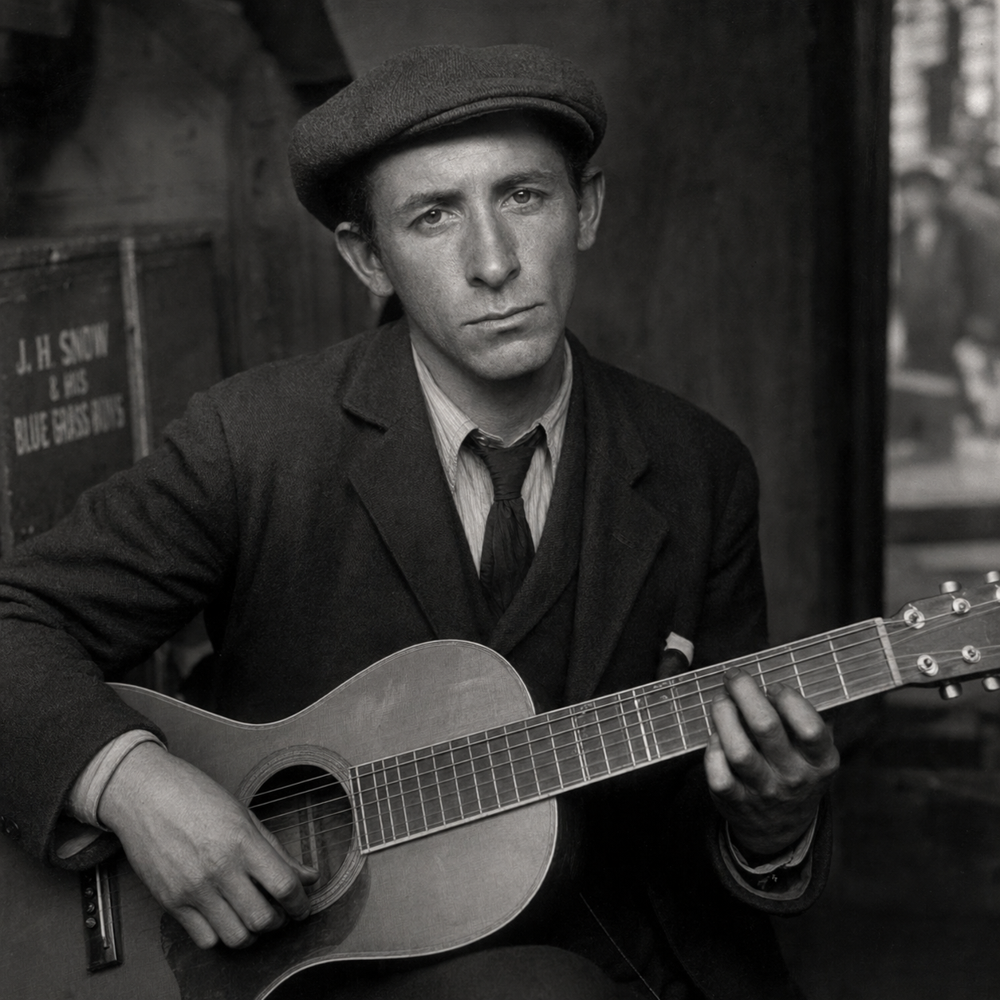

Cole Mercer
(375 Points)
Male; Age 34; 5'7", 168 lbs; A lean Black man in his mid-thirties with hard road miles in his coat, careful hands on his guitar case, and the habit of listening to a room before he speaks. He looks like a working musician who knows camps, depots, strikes, and bad nights, and whose eyes go very still when a place starts humming wrong.
| ST: 11/14 [10] | IQ: 15 [60] | Speed: 6.25 |
| DX: 13 [30] | HT: 12/16 [20] | Move: 6 |
| Dodge: 6 |
Advantages
Alertness +2 [10]; Charisma +1 [5] (Reaction: +1); Contacts (Boarding House Keeper) (Skill 12, 9 or less, Somewhat Reliable) [1]; Contacts (Juke Joint Owner / Rumor Broker) (Skill 12, 12 or less, Somewhat Reliable) [2]; Contacts (Porter Foreman) (Skill 15, 9 or less, Somewhat Reliable) [2]; Contacts (Rail Depot Clerk) (Skill 15, 9 or less, Somewhat Reliable) [2]; Contacts (Sleep-Car Porter / Route Courier) (Skill 15, 12 or less, Somewhat Reliable) [4]; Contacts (Union Talker) (Skill 15, 12 or less, Somewhat Reliable) [4]; Danger Sense [15]; Empathy [15]; Hard to Kill 2 [10] (Note: +2 to HT for Survival Rolls); Lang: English (Native) [0]; Patron (Followers of the Right Hand) (15 or less) [60] (Equipment: Standard, +5; Special Qualities (Access to Magic in Non-magical World): Very Unusual, +10; Secret: -5; Subtraction (Minimal Intervention): -5); Patron (Sanctified Chord Circle) (9 or less) [5] (Secret: -5); Reputation +2 +2 +2 (Can settle a room, draw truth through song, and be trusted where grief is close to the surface) [10] (Reaction: +2); Strong Will +5 [20] (Will: 20); Voice [10] (Reaction: +2).
Disadvantages
Duty (15 or less) [-25] (Involuntary: -5; Subtraction (Extremely Hazardous): -5); Enemy (Unknown Enemies of FRH) [-60] (Unknown: -5; Subtraction (Access to Magic in Non-magical World): -15); Pacifism (Self-Defense Only) [-15]; Second Class Citizen (Black man in 1923) [-5] (Reaction: -1); Secret (Music-bound psionic gift) [-30]; Sense of Duty (Workers, drifters, and people music is all that is keeping together) [-5]; Struggling [-10] (Starting Wealth: $375).
Quirks
Always tunes the guitar before hard conversations.; Cannot pass a good acoustic corner without testing it.; Checks the case, bridge, pegs, and frets before sleep.; Keeps a harmonica in his pocket like an ugly little holy relic.; Worries over broken strings like other men worry over blood loss.. [-5]Powers
Astral Projection 3 [9]; Psionic Healing 8 [24]; Telepathy 5* [10].
*Cost modifiers: Empathy.
Skills
Acting-16 [4]; Area Knowledge (Lower Mississippi Rail and Juke Circuits)-19 [8]; Area Knowledge (Rail Yards and Rooming Houses)-18 [6]; Astral Sight-16 [6] (Fatigue: 0, Range: 9 yd, Area: self, Maintain: infinite, Page: P11); Bard-17* [1]; Carousing-14 [8]; Detect Lies-22* [10]; Diplomacy-21* [12]; Emotion Sense-17 [8] (Fatigue: 0, Range: 4 yd, Area: subject, Maintain: infinite, Resist: MS, Page: P20); Fast-Talk-16 [4]; First Aid/TL6-18 [6]; Guns/TL6 (Shotgun)-16 [2]; History (Black Labor and Blues Routes)-13/19 [2] (Specialty: Black Labor and Blues Routes); Holdout-15 [2]; Intimidation-17 [6]; Leadership-15* [1]; Merchant-16 [4]; Musical Instrument (Guitar)-16/22 [8] (Specialty: Guitar); Musical Instrument (Harmonica)-13/19 [2] (Specialty: Harmonica); Psionic Healing-19 [12] (Fatigue: var., Range: touch, Area: subject, Page: P15); Psychology-17* [2]; Research-17 [6]; Scrounging-16 [2]; Sense Aura-19 [12] (Fatigue: 0, Range: 7 yd, Area: self, Maintain: min., Page: P16); Shadowing-16 [4]; Singing-14* [1]; Streetwise-16 [4]; Survival (Urban)-16 [4]; Survival (Woodlands)-16 [4]; Tracking-16 [4]; Writing-17 [6].
*Cost modifiers: Charisma, Voice, Empathy, Telepathy.
Description
Cole Mercer learned his trade in the places respectable histories skip over: rail sidings, labor camps, depot platforms, boarding houses, strike edges, bad roads, and juke joints where a man could earn a meal, a bed, a warning, or a beating depending on how the room was feeling. Music was never just decoration to him. It was work, witness, appetite, worship, bargaining, consolation, and sometimes the only thing keeping a crowd from breaking the wrong way. He became the sort of musician who listens before he plays, who can tell when a room wants laughter, when it wants grief, and when it wants the truth spoken sideways so people can bear to hear it at all.Being a Black man moving that circuit in 1923 taught Cole exactly what kind of grace the world permits and what kind it punishes. He knows routes, rumors, labor politics, boarding house etiquette, who can be trusted near money, who can be trusted near sorrow, and which places are humming wrong before anyone else notices. He lives close to struggle and does not pretend otherwise. His hands are careful because his guitar is part livelihood, part companion, and part instrument in the older sense of the word: the thing through which something larger can sometimes pass. What first looked like instinct turned out to be a dangerous gift. Cole can read strain, lies, hurt, and bad spiritual weather through people and places, and when he sings or plays at the right moment, memory, feeling, and buried truth have a way of rising to the surface whether anyone in the room wanted them to or not.
What keeps Cole from becoming merely uncanny is that mercy is built into him as deeply as the music. He is not a flashy wonder-worker and not a spellcaster with a prop. He is a labor-route witness and room-settler, a man whose powers intensify who he already was: someone good in a crisis, good at reading people, good at carrying news, and unable to walk past the wounded, the desperate, or the nearly broken without trying to help. He will use the guitar when he has it, the harmonica when he does not, and whatever courage he has left when neither feels like enough. That is why people trust him where grief is close to the surface. He sounds like a musician, but he works like a witness.